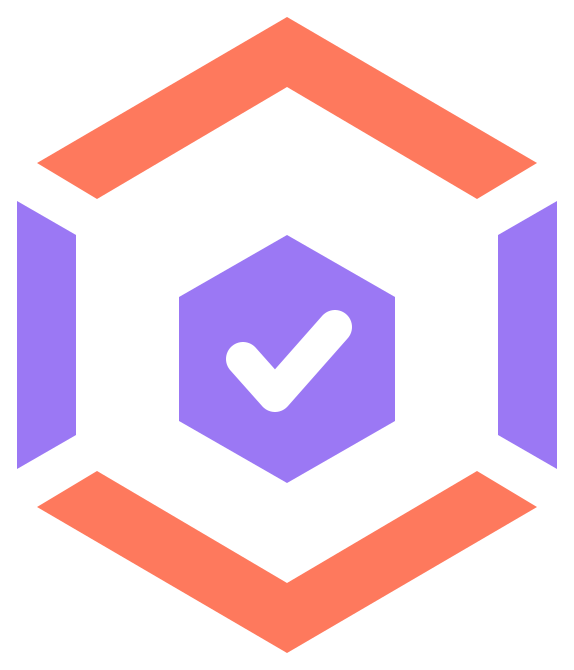

un
ticket
Sprint
Issues
PRs
Posts
Engineers
Search…
⌘K
JM
Engineers
JM
Jasper
@jasper
4
PRs
2
rev
6
iss
TB
Tobias
@tobi
2
PRs
3
rev
3
iss
JK
Jess
@jess
2
PRs
1
rev
4
iss
SA
Sam
@sam
1
PR
2
rev
2
iss
Live activity
⬢
Jasper
merged
#362
— narrator now dedups by PR identity, so a merge + close no longer double-posts.
12 min ago · unticket
✦
Release notes
v0.9 — Slack channel selectors, newly-detected repo policy, refresh-token rotation.
38 min ago · auto-generated
👁
Tobias
requested review on
#364
— refresh-token race on concurrent 401s.
1 h ago · unticket
⬢
Sam
merged
#358
— per-feed Slack selectors in Settings.
3 h ago · unticket
↑
Jess
pushed 4 commits to
main
in noxkey.
5 h ago · noxkey